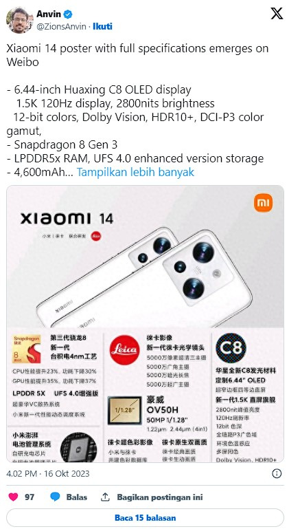

Xiaomi 14 dan Xiaomi 14 Pro konon bakal diluncurkan di China pada 27 Oktober 2023. Sejumlah bocoran sudah wara-wiri di dunia maya, namun yang satu ini bakal bikin kamu tergoda.
Adalah leaker @ZionsAnvin, lewat akun X.com dia memposting bocoran spesifikasi Xiaomi 14. Informasi yang diungkap memang belum tentu akurat tapi setidaknya bisa jadi gambaran kegaharan penerus Xiaomi 13 itu.
Xiaomi 14 disebutkan bakal membawa layar 6,44 inch memakai panel OLED Huaxing C8. Layar tersebut punya resolusi 1,5K, refresh rate 120Hz dan kecerahan 2.800 nits.
Keunggulan bagian layar tak sebatas itu. Xiaomi memberikan 12-bit color, dukungan Dolby Vision, DCI-P3 color gamut dan HDR10+.
Sesuai bocoran sebelumnya, Xiaomi 14 bakal disokong Snapdragon 8 Gen 3. Ini adalah chipset terbaru Qualcomm yang akan diumumkan di perhelatan Snapdragon Summit yang berlangsung di Hawaii pada 24 Oktober mendatang.

Xiaomi turut memasang RAM LPDDR5x dan penyimpanan UFS 4.0. Baterai berkapasitas 4.600 mAh disematkan di dalam Xiaomi 14 dengan dukungan pengisian cepat 90W.
Tiga kamera berukuran 50 MP disematkan di bagian belakang dengan sentuhan Leica. Komposisinya terdiri dari kamera utama yang memakai sensor OmniVision OV50H dengan OIS, dipadukan ultra-wide dan telefoto.
Fitur lain yang melengkapi keunggulan Xiaomi 14 meliputi speaker ganda, IR Blaster, motor akustik 2-in-1 dan sistem pendingin besar. HP ini juga memiliki sertifikat IP68 yang artinya tahan debu dan air.